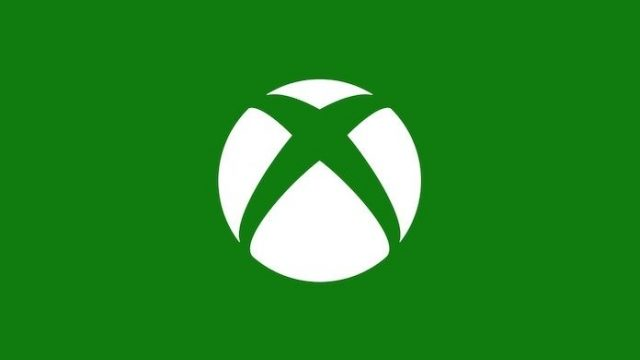

Windows
Windows es el nombre de una familia de distribuciones de software para PC, teléfonos inteligentes, servidores y sistemas empotrados, desarrollados y vendidos por Microsoft y disponibles para múltiples arquitecturas, tales como x86, x86-64 y ARM.
Desde un punto de vista técnico, no son sistemas operativos, sino que contienen uno (tradicionalmente MS-DOS o el más actual cuyo núcleo es Windows NT) junto con una amplia variedad de software; no obstante, es usual (aunque no necesariamente correcto) denominar al conjunto como sistema operativo en lugar de distribución. Microsoft introdujo un entorno operativo denominado Windows como un complemento para MS-DOS en respuesta al creciente interés en las interfaces gráficas de usuario (GUI).1 Microsoft Windows llegó a dominar el mercado mundial de computadoras personales, con más del 90 % de la cuota de mercado, superando a Mac OS, que había sido introducido en 1984.
La versión más reciente de Windows es Windows 10 para equipos de escritorio, Windows Server 2019 para servidores y Windows 10 Mobile para dispositivos móviles. La primera versión en español fue Windows 2.1.
A continuacion se muestra el primer sonido al iniciar el primer windows

Xbox
Xbox, también llamada Xbox Clásica, es una videoconsola de sobremesa de la sexta generación de consolas producida por Microsoft y la primera de esta empresa, en colaboración con Intel. Su principal característica es su procesador central basado en el procesador Intel Pentium III. El sistema también incorpora un lector de DVD, un disco duro interno, un puerto ethernet, y por último el sistema dispone de cuatro conectores para los mandos. Las unidades vendidas de este equipo fueron 24 000 000 consolas, según las cifras oficiales.
A continuacion se muestra el primer sonido al iniciar el primer xbox